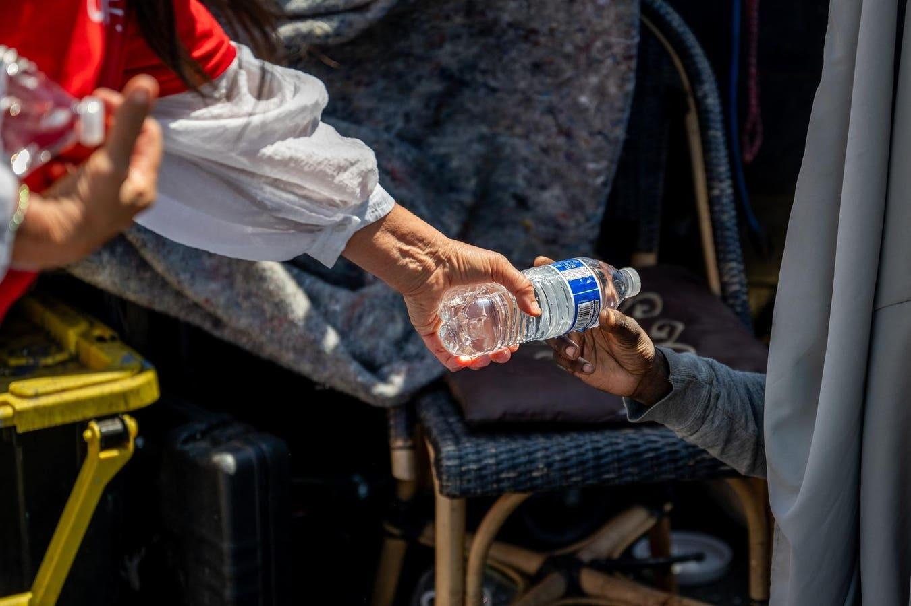

Charitable Or Criminal? Arizona Nonprofit Latest Being Punished Over Feeding Homeless Without PermitsTopline An Arizona nonprofit has been barred from hosting its weekly picnics for the homeless in Tempe public parks for at least a year after city officials banned the events due to what they called "repeated defiance" of local permitting laws, the latest in a series of reports across the country that have sparked debate over using public spaces to hand out food to those in need. Key Facts The city of Tempe said the charity, AZ Hugs, had violated a local city code barring "unpermitted food events" by hosting the picnics, where volunteers regularly handed out meals and connected people with local services. The group had been holding the picnics weekly for three years despite more than a year of permitting warnings from the city, Tempe public information officer Susie Steckner told Forbes, until organizer Austin Davis formally applied for a special events permit in November. Davis continued to host the events while the permit was pending, and Tempe then denied his request, blaming the repeated violations, complaints from neighbors and what they said was an uptick of trash and drug paraphernalia in Papago Park, the picnics’ usual location. City officials said in a statement to Forbes on Tuesday that Tempe has made strides in its efforts to help house people in need in recent years and that a "careful balance is needed to help those who need it most and still keep Tempe’s parks and neighborhoods safe, clean and available for everyone’s enjoyment." Davis did not immediately reply to Forbes’ request for comment but told the Arizona Republic there have never been incidents with drinking or drugs at the picnic, and that he doesn't plan to stop hosting them despite the move from the city. Key Background AZ Hugs for the Houseless is just the latest nonprofit to be penalized by authorities for breaking local laws while handing out food. A series of videos that went viral on TikTok last year showed volunteers with the Houston chapter of the Food Not Bombs charity being repeatedly cited for giving out food outside of the city’s public library. Volunteers received dozens of tickets within a matter of months that listed their crime as “conduct a food service event (feed homeless) without consent of property owner.” At least one of the volunteers went to trial over his ticket last August, and was found not guilty, though city officials told the Associated Press they will continue to “vigorously pursue violations of its ordinance relating to feeding of the homeless." In May, the U.S. Department of Justice stepped in after the charity Micah's Way was penalized and threatened with criminal action for feeding the homeless by the city of Santa Ana, California, which claimed the group violated zoning laws. The Justice Department backed the Christian charity's claim that distributing food and drink to the homeless is a "religious exercise," the Associated Press reported. In Columbia, South Carolina, a charity called Be Kind Be Great was told it could no longer host fish fries in a local park as the city council started to consider a law that would make it illegal to feed the homeless outside of a specified, central location. Charitable volunteers have argued the law would make feeding those in need more difficult. Crucial Quote "It criminalizes the Samaritan for giving," said lawyer Paul Kubosh, who represented Food Not Bombs volunteer Phillip Picone at his trial. Contra The local officials enforcing laws against feeding the homeless in dozens of U.S. cities cite health and safety concerns for those receiving the food and those who live and work nearby, as well as impacts to the local environment. In Tempe, the city's letter announcing AZ Hugs’ permit denial said officials considered things like "excessive trash, hazards such as hypodermic needles, improper use of ramadas, environmental impacts and conflicts with properly permitted events” in its decision. In Houston, the office of Mayor Sylvester Turner said tickets were issued to Food Not Bombs volunteers after a rise in threats and violent incidents directed at employees and visitors to the library, the AP reported. After a volunteer was ticketed for feeding the hungry in a public park in Atlanta, a Georgia State University police sergeant said concerns with such events include food safety, garbage and the human waste that results when people are fed in a place that doesn't have bathrooms, according to CBS 58. Other lawmakers have cited concerns over the spread of Hepatitis A among homeless populations as reasons to regulate food sharing. Chief Critic Those providing the services say the regulations represent a push toward the criminalization of homelessness and are part of an effort to reduce visibility of the problem. Davis told the Arizona Republic he thinks Tempe officials are working to hide the homeless population from public view. Michael Stoops, former director of the National Coalition for the Homeless, told NPR that cities hope “restricting sharing of food will somehow make [the] homeless disappear and go away. But I can promise you that even if these ordinances are adopted, it's not going to get rid of homelessness." Maria Foscarinis, the founder of the National Law Center on Homelessness & Poverty, told Newsweek that while sanitation and public health are important, “these issues can be addressed without banning sharing food with people who are hungry and people who are impoverished." |
 |